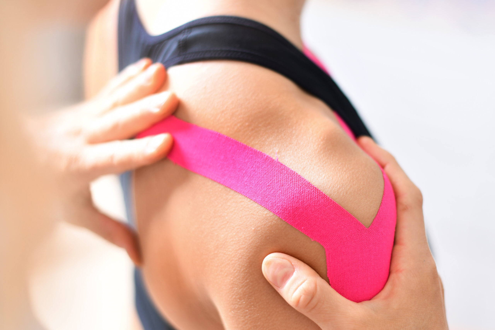
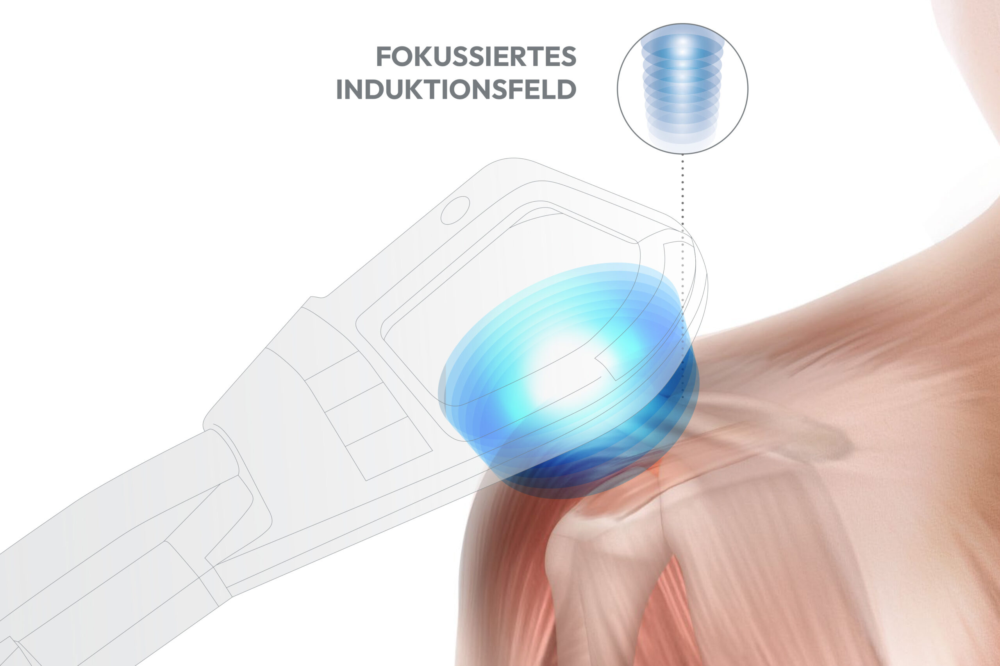
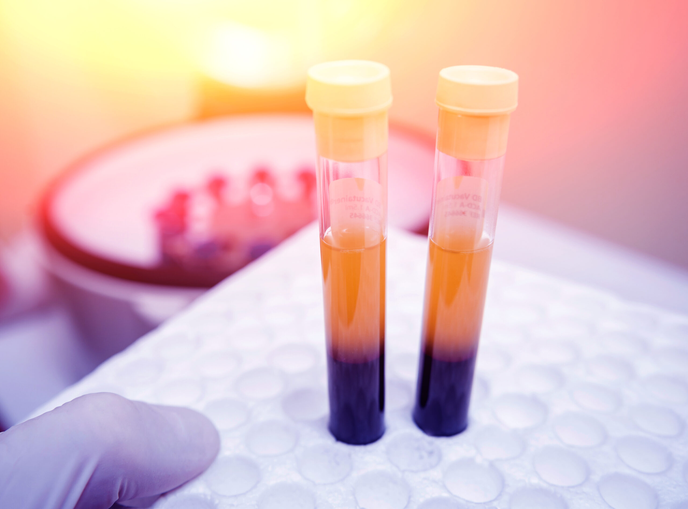
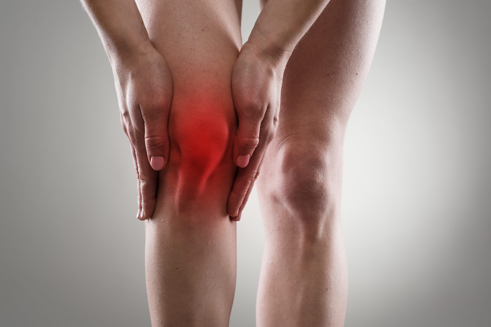
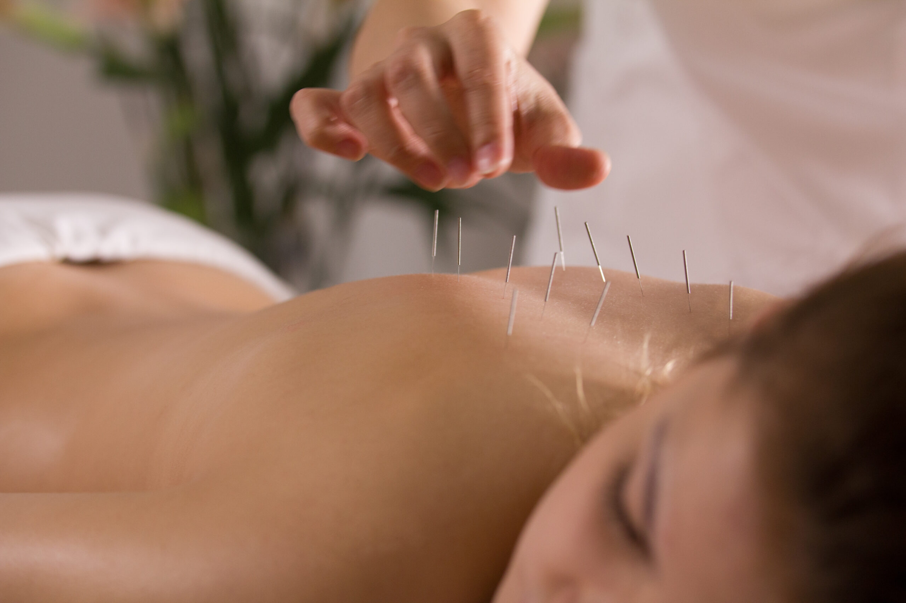
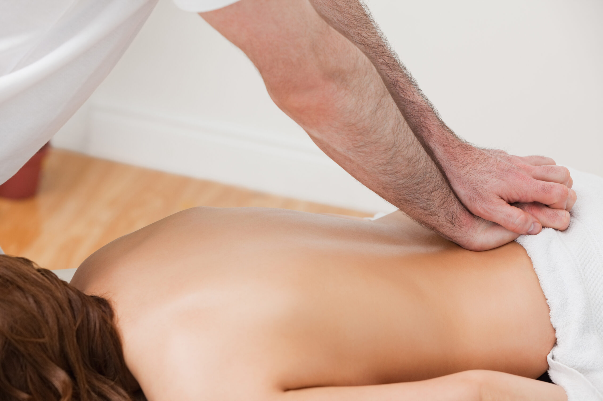
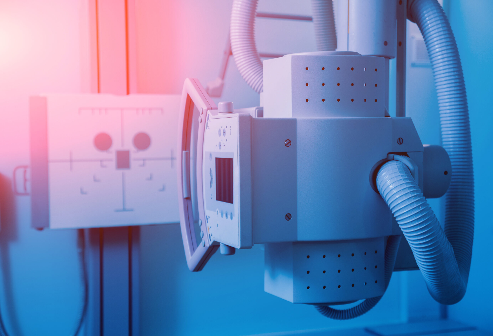
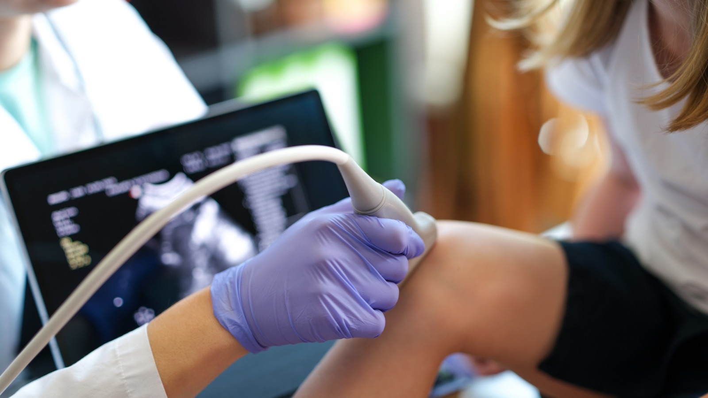

Ihr Experte für Orthopädie, Unfallchirurgie und Sportmedizin – mit moderner Medizin für Ihre Gesundheit. Bei uns steht die konservative, nicht-operative Orthopädie im Vordergrund: der Patient als Ganzes im Mittelpunkt.

Zum 1. Januar 2025 habe ich, Dr. Russ, die orthopädische Praxis Dr. Piscalar in Gerbrunn übernommen. Die Praxis wurde renoviert, modernisiert und mit neuester Technik ausgestattet, um unseren Patientinnen und Patienten eine optimale Versorgung zu bieten.
Dabei setze ich auf ein hochqualifiziertes Team in einem angenehmen Arbeitsumfeld. Eine sorgfältige Anamnese und gründliche körperliche Untersuchung sind bei uns gekoppelt mit hochmodernen Untersuchungsverfahren.
In unserer Praxis bieten wir Ihnen ein breites Spektrum an orthopädischen und sportmedizinischen Leistungen.

Schmerzfrei und nicht-invasiv – bei Arthrose, Kalkschulter, Sehnenentzündungen und Sportverletzungen.

Regenerative Therapie mit plättchenreichem Plasma – bei Sportverletzungen, Arthrose und Gelenkschmerzen.

Gezielte Injektionen bei Arthrose – für bessere Stoßdämpfung und mehr Beweglichkeit.

Traditionsreiche ergänzende Therapie bei Rücken- und Gelenkschmerzen.
Selbstzahler / PrivatkassenVorbeugung, Diagnose und Behandlung von Sportverletzungen – mit ärztlicher Zusatzbezeichnung.

Blockaden lösen, Gelenke mobilisieren, Muskulatur entspannen.
Kassenleistung
Präzise Diagnostik bei deutlich reduzierter Strahlenbelastung.

Strahlungsfreie Echtzeit-Diagnostik für Muskeln, Sehnen, Bänder und Gelenke – auch für Kinder geeignet.
Terminbuchung auch online möglich – bequem über arzt-direkt.
Zeitnahe Termine, kostenfreie Parkplätze vor Ort – und die Terminbuchung ist auch online möglich.